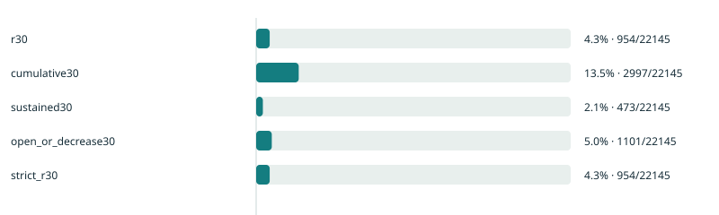

IncentiveScope: participation after trading rebates end
Executive summary
IncentiveScope investigates whether GMX V2 trading addresses continued opening positions after the first Arbitrum STIP trading-rebate program ended, then asks whether earlier trading behavior could predict that participation. It connects protocol-event interpretation, reproducible SQL analysis and a PyTorch time backtest in one public research case.
The frozen extract contains 907.1k indexed executions. Of the 22,145 addresses that opened or increased a position during the earning window, 954 returned in the final seven days of the first post month: R30 was 4.31%. A broader “any return within 30 days” measure was 13.53%; repeated activity on at least two R30 dates was 2.14%. These definitions reveal different aspects of participation and should accompany each other in incentive monitoring.
Pre-cutoff trading features provide useful ranking information on this single historical holdout. The primary PyTorch MLP ranked 565 of the 954 returning addresses in its top 2,215 predictions, giving 25.51% precision and 5.92× lift. Its test Average Precision, 0.3387, was slightly below logistic regression, 0.3412, and histogram gradient boosting, 0.3403. The result supports retaining simple baselines; it does not establish a neural-network advantage.
This is an address-level observational study. It does not estimate incremental acquisition, the causal effect of incentives or return on reward spending. The descriptive dashboard and ML research page expose the figures, definitions and downloadable results behind the findings.
Research question and observed population
Trading rebates can generate short-lived activity as well as recurring participation. The decision-relevant question is whether campaign-period accounts are still opening positions later, and which measures distinguish an occasional revisit from continuing engagement. Predicting an address's future participation is a separate question from predicting whether another rebate would change its behavior.
The study covers GMX V2 perpetual trading on Arbitrum One. One input row represents a successful indexed execution, identified by chain, transaction hash and execution log index. The extraction spans [2023-09-20, 2024-05-29) UTC and contains 907,107 executions from 123,985 protocol accounts. Swaps, liquidity actions, failed executions and cancelled orders are outside scope. A protocol account is the position's account; the transaction sender may be a keeper and cannot identify the trader. Multiple addresses may belong to one entity. Data-quality assessment, event and fee validation.
The earning boundary was reconstructed from archived GMX calculation code, weekly distribution files and the final report. The historical guard is strictly after November 15 midnight; for integer-second events, the analysis uses [2023-11-15T00:00:01Z, 2024-03-27T00:00:00Z). March 27 is the final earning cutoff. Substituting the later administrative end or a payment date would change the cohort and follow-up windows. Boundary evidence.
The fixed cohort includes every account with a successful, positive-size position opening or increase during that interval. Liquidations, collateral-only changes and later nonreturners do not become qualifying openings or disappear from the denominator.
Participation is much lower near day 30 than across the whole month
| Measure | UTC observation window | Returning addresses / fixed cohort | Rate |
|---|---|---|---|
| R30 opening return | April 19–26, end excluded | 954 / 22,145 | 4.31% |
| Any opening within 30 days | March 27–April 26, end excluded | 2,997 / 22,145 | 13.53% |
| Opening on at least two R30 dates | April 19–26, end excluded | 473 / 22,145 | 2.14% |
| R60 opening return | May 19–26, end excluded | 1,126 / 22,145 | 5.08% |
R30 measures participation during post days 24–30. It is not the chance of any revisit in the first month. Its gap from cumulative participation shows why a headline “30-day retention” needs an explicit window. R60 can exceed R30 because these are separate observation weeks, rather than a monotonically decreasing survival curve. The strict R30 sensitivity additionally requires the qualifying order to have been created at or after the earning cutoff; it reproduces all 954 returns. Published metric results.

Previously observed addresses had 8.62% R30 participation, compared with 3.35% for those first observed during the campaign: 346/4,016 versus 608/18,129. This is useful segmentation, but “first observed” refers to the extract's bounded history. It does not mean first-ever GMX use, a newly acquired customer or a new person. Earlier task-campaign exposure also makes the history group unsuitable as an untreated control.
Excluding the largest 1% of accounts by campaign opening size gives 904 returns among 21,923 remaining addresses, or 4.12%. The low aggregate R30 remains under this sensitivity. Ranking by pre-cutoff size avoids selecting the population using future outcomes; it does not establish equal reward or fee concentration.
For 17,390 mature addresses, holding the accounts and 30-day observation lengths constant yields a post/pre active-address-day ratio of 0.559 and net opening-fee ratio of 0.337. Inactive days remain zero observations. Net position fees are after trader discounts and before external rebates; they exclude funding, borrowing, decrease fees, UI fees and gas. These ratios describe changed activity and fee intensity, rather than total trader cost, protocol revenue or a causal response to reward withdrawal. Method discussion.
A prediction experiment with information available before each cutoff
Each ML sample is one protocol address at a UTC prediction cutoff, T. Eligibility requires an opening during [earning start, T). All features use events strictly before T; the label is an opening during [T+23 days, T+30 days). Event-time reconstruction uses the same frozen raw extract, avoiding future full-campaign aggregates and return fields.
| Split | Prediction cutoffs | Observations | Positive observations |
|---|---|---|---|
| Training | Nov 22, Dec 6, Dec 20, Jan 3, Jan 17 | 32,367 | 4,515 |
| Validation | February 21, 2024 | 16,634 | 1,598 |
| Final test | March 27, 2024 | 22,145 | 954 |
The November and December cutoffs are in 2023; January cutoffs are in 2024. Training contains 11,363 distinct addresses, with earlier accounts appearing at multiple landmarks. Rows receive equal weight and are not independent human users. All training labels finish by February 16, before validation prediction; validation labels finish by March 22, before final prediction. Validation examples are never added to parameter training. Complete split schedule and feature dictionary.
The 17 features summarize opening counts, active UTC days, executed USD size and net opening fees over the preceding 7, 30 and 60 days; observed opening age and recency; pre-campaign opening history; market diversity; and the largest market's 30-day size share. Counts, amounts, ages and diversity use log1p; standardization is fitted on training observations only. Identifiers and cutoff dates remain tracking fields. Zero-activity windows remain in the data; missing eligible opening fees stop construction.
This inclusion decision matters: at final prediction, 13,561 addresses had not opened in the latest 30 days, yet 148 later returned. Filtering to currently active accounts would answer a different question. Opening-only ML history also differs from the descriptive report's broader earlier-activity flag, which includes decreases.
PyTorch adds a testable hypothesis rather than a promised winner
Five methods share the same features, splits and evaluation: training prevalence, a recency ranking, L2 logistic regression, histogram gradient boosting and an MLP. Retaining a tree baseline is appropriate because neural networks do not consistently dominate medium-sized tabular tasks. Grinsztajn et al., NeurIPS 2022.
The MLP uses a 17 → 32 → 16 → 1 architecture, ReLU, dropout 0.1, AdamW and unweighted binary cross-entropy with logits. Learning rate and weight decay are both 0.001; batch size is 256. It stops after ten epochs without validation AP improvement, up to 100 epochs, and restores the best weights. Logistic regularization and boosting iterations also use validation AP. Seed 42 is the predeclared primary MLP run; seeds 17 and 73 are reported without selecting the best final-test result.
Average Precision is the main metric because positives are uncommon. It is computed from every score according to scikit-learn's definition, rather than a trapezoidal area under an interpolated PR curve. ROC-AUC, top-decile precision/recall/lift, Brier score and log loss provide additional views. The top-decile quota is ceil(0.1 × N), with account order resolving ties. The recency baseline supplies ranking scores, so it has no probability metrics. Average Precision definition.
| Method | Validation AP | Final-test AP | Top 10% lift | Brier score |
|---|---|---|---|---|
| Training prevalence | 0.0961 | 0.0431 | — | 0.05052 |
| Recent activity ranking | 0.2720 | 0.2177 | 4.77× | — |
| Logistic regression | 0.3874 | 0.3412 | 5.94× | 0.03435 |
| Histogram gradient boosting | 0.3877 | 0.3403 | 5.87× | 0.03508 |
| PyTorch MLP, seed 42 | 0.3951 | 0.3387 | 5.92× | 0.03476 |
The constant model has no ranking discrimination; its tied-score decile depends on the declared tie convention. The MLP was selected by validation AP, but both learned baselines had slightly higher final-test AP. The three MLP seeds produced AP 0.3386, 0.3387 and 0.3433. There is no statistical superiority claim, and seed 73 does not replace the primary run. Full model and seed results.

The primary MLP's top 2,215 accounts contain 565 of 954 positives: precision 25.51%, recall 59.22%, ROC-AUC 0.8538 and log loss 0.1370. This demonstrates ranking association, not the effectiveness of targeting those accounts with rewards. Accounts present in parameter training have AP 0.3881, versus 0.2715 for accounts absent from parameter training. Their different prevalence and tenure also affect this comparison; the groups are not randomized.
Distribution change limits probability interpretation
The pooled training positive rate is 13.95%, validation is 9.61%, and final test is 4.31%. Training and validation labels occur during earning; final labels occur after it. The population also ages and accumulates inactive accounts. This is an explicitly changed prediction setting, with no counterfactual separating incentive withdrawal from markets, cohort composition or overlapping campaigns.
The primary MLP's mean test probability is 6.48%, above observed participation by 2.18 percentage points. Reliability figures retain bin counts and expose the discrepancy. No probability-calibration model is fitted to the final test. Scores may support further ranking research, but these uncalibrated probabilities should not become a budget forecast.

Validation permutation importance identifies opening recency and 60-day active days as the strongest dependencies of the primary MLP, with mean AP drops of 0.1134 and 0.0438. Observed opening age, recent fees and 30-day active days also contribute. Correlated features share information, and shuffle variation is not a confidence interval. These are predictive associations rather than causal behavior drivers.
What has been validated, and what remains unknown
Local audits check 36 contiguous partitions, 252 dates, execution-key uniqueness, declared coverage, timestamp ordering and field missingness. An independent standard-library Python recount reproduces the cohort and opening-return counts without importing the analyzer or its DuckDB SQL. Five deliberately selected March receipts check account, execution type, size, log index and fee semantics. They establish selected event interpretations for one day and USDC collateral; they do not certify the entire historical indexer. Audit receipt, selected receipt evidence.
A semantic investigation found that forced ADL reductions can use the market-decrease order type. The extracted source omits the secondary marker required to distinguish them. Consequently, voluntary participation including closes is withheld; the opening-only headline remains available. Dune companion queries are source-reviewed but unexecuted, with no query/execution IDs or claimed cross-source agreement. Dune status and validation contract.
The official archive reconciles 19 epochs allocating approximately 4.98 million ARB to 16,528 recipient addresses. Exact integer amounts are retained. These are allocations, not verified transfers, and receiver overrides can merge original trader entitlements. Reward recipients and the opening cohort have different eligibility rules. Program spend divided by retained opening accounts would therefore create an unsupported cost figure. Reward-allocation evidence.
History before September 20 is absent; other campaigns and market conditions overlap the observation periods. Features reconstruct event times from a later extract, without auditing historical index availability or corrections. One campaign and one final holdout cannot establish generalization to other protocols or the causal value of rebate targeting.
Inspect, reproduce and extend
The project publishes source SQL, configuration, metric JSON, address-cohort CSVs, figures and notebooks. Saved notebooks read the committed results by default; retraining is explicit. Frozen normalized input and its manifest are downloadable from the input release, with SHA-256 76e4992debf0bf2e60328221c94c840aa97c2c7545550085bcd3e83d09fe61a3.
The CPU reference records Python 3.14.4, PyTorch 2.14.1+cpu, dependency pins, source commit and hashes, feature order, preprocessing parameters and seeds. Prediction exports allow independent metric recount; tensor checkpoints support safe weight reload and replay. Boundary, future-event invariance, training-only preprocessing and test-isolated fitting checks are part of the CPU ML suite. Reproduction is scoped to the recorded environment; cross-version and CPU/GPU bitwise equality is not promised. Reproduction instructions, PyTorch reproducibility guidance.
For incentive research, the immediate contribution is a defensible monitoring approach: report reach, late-window participation and repeated activity with fixed denominators; segment bounded histories without calling them acquisition; and preserve a simple predictive benchmark. A future intervention study would need measured reward exposure, reliable original-account attribution and a randomized or defensible quasi-experimental comparison. More model complexity would not supply that missing identification.